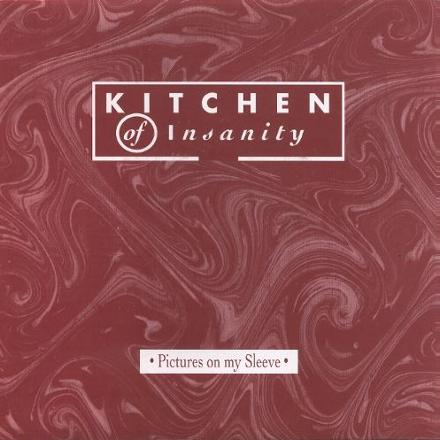

|
|

|
|
|
|
The search to find a fitting drummer lingers on though, and after a while the band recruit a new member to occupy the drum stool,
Donald Vergauwen. Reinforced once again, it's off to promote the new album wherever possible. In concert
it soon proves to be hard to paint the fitting atmosphere of Orpheus Feeling's epics, resulting in
fantastic shows while struggling with deep contemplative moments.
But the wagon rolls on and the band surprise all with their next single, the non album track Pictures On My Sleeve. It is,
in the wake of the doom laden second album, a rather catchy pop song that both deserves and gets the much needed airplay. Musically, favourites like
Jacques Brel and Scott Walker are not too far off, while the lyric is an ode to
Arthur Rimbaud, the great 19th Century French poet. For this single, the band set out to make a second
video clip but the project got stuck after a test run.

Kitchen ofInsanity maintain a strong concert reputation, resulting in sponsorship by the promoters of the Hove-live festival where
the band find themselves playing in the company of The Troggs, the legendary sixties rockers that gave the world hit records such as
Wild Thing and With A Girl Like You. Interestingly, Reg Presley
and co. used to tour with very few instrumentation, on this occasion using the Kitchen's material. How does that look on your curriculum vitae!?...
Whether or not in the company of better known celebrities, time after time the band is being asked to play at sold out venues and bars.
New ideas and a fresh batch of songs saw the band return to the studio soon after. Inside the protective cocoon of the recording facility a
handful of new tracks were recorded, producing rough versions sounding very promising. The songs were like a marriage between
Dreamaway Sunday and Orpheus Feeling. Here again was the dark, bluesy urban-psychedelia of the former,
now combined with the dreamy, extended melancholia of the latter. Best proof of this, the aptly titled Next Song.
Many a song here meets very high standards in quality. Lavinia, for instance, perfectly ties together both the lurking threats and the sweetness
of genuine psychedelia. On the other hand there is Watching & Waiting, a beautiful yet dramatic epic in the glorious fashion of
Orpheus Feeling (the song) and Never Growing Inside.
With the Kitchen's creative machinery in full motion once again, there was no sing at all of the much feared third album syndrome,
where bands would run out of original material after having filled two successive records with the stuff dating back to their early days as upstarts.

Fans were this close to getting the third Kitchen of Insanity album...
Despite all efforts, Loser's Manual never gets beyond the level of being in-the-making. It nearly did but then the sky turned grey,
thunderous clouds overcast the band when Fil Yzerdraad was asked to join a better known band with clearer future perspectives. Fil soon left
the shabby vessel behind and moved on...
But the cart must roll on. Determined to stay on the tracks, the band soon find a new multi instrumentalist bass player, J.P.
Soon after this new blood got pumped into the band, a breeze of fresh air comes along and invites the Kitchen back into the studio. Entitled The Laughing Academy, this latest project propels a drastic change in the overall sound of the band. Most of the new material is pretty straightforward, much heavier and less inspiring. The main, head turning, difference is the use of a second vocal: the high pitched voice of J.P. is in stark contrast with Paul's deep baritone. Sadly, The Laughing Academy fails to meet its predecessors in both quality and originality of the songs; remaining unpublished and known only by insiders. Standout tracks are the psychedelic Moonlight and Masterthief, a true minor classic.
This last Kitchen chemistry continues to produce a great number of live shows. The concert tape of the gig at Prins Kardinaal in Lier stands as proof of the Kitchen's convincing ability to put on a tremendous show, no matter what.

|

|
| background music: Watching & Waiting (Loser's Manual) |
|
|
|